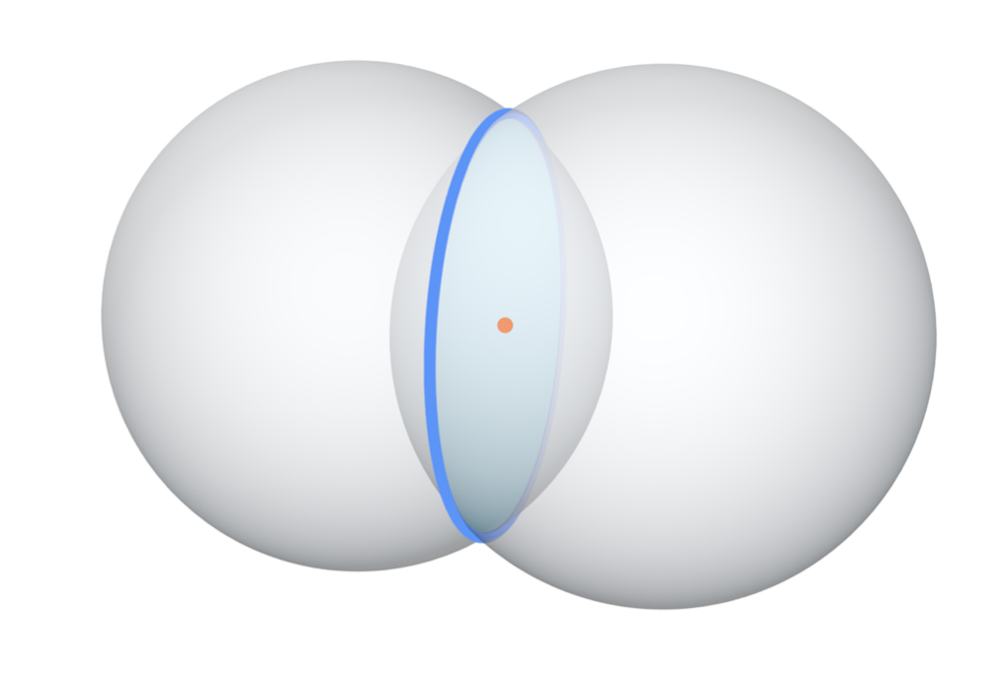
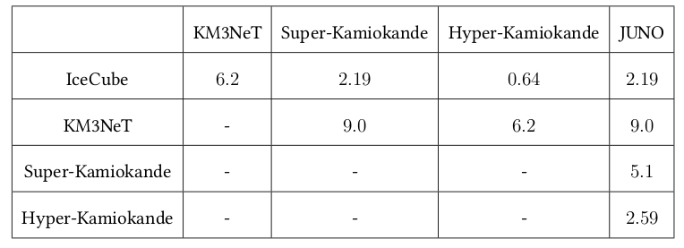
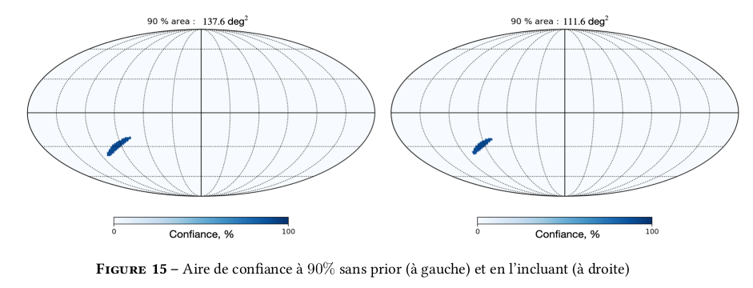
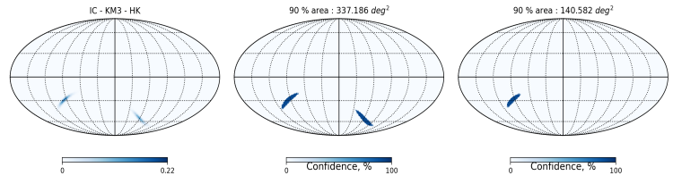
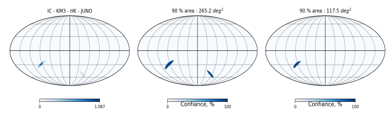

Intership of the first year of master degree (2 month)

Introduction
During my first year of a master's degree in fundamental physics at the University of Paris, I was able to do a 2-month internship in the High Energy Astrophysics Department of the Astroparticle and Cosmology Laboratory of Paris (APC) under the direction of Alexis Coleiro. I was able to work on methods for triangulating a neutrino signal from a Core-Collapse SuperNova (CCSN).
Principle et détection
In this first study, we consider 5 detectors placed at different locations on the globe :
- KM3NeT (Mediterranean Sea)
- Super-Kamiokande (Japan)
- Hyper-Kamiokande (Japan)
- Icecube (Antarctica)
- JUNO (China)

The position of the detectors and their numbers play a decisive role in the future results on the location of the neutrino source. The larger the number of detectors, the smaller the uncertainty on the position. Similarly, the further away the detectors are, the smaller the uncertainty on the position, the further apart the detectors are, the smaller the 90% confidence interval. The figure below shows how the triangulation method works. the triangulation method works. For two detectors, the source is at the intersection of the two spheres, i.e. a circle.
The time interval can be related to the position of the detectors with the relation :
`Delta t_(ij) = ((vec(r)_(i) - vec(r)_(j)).vec(n))/c`
where is the viewing direction and is the velocity of light. The relative positions of the detectors produce a delay between the two detections due to the finite speed of light and the fixed position of the detectors. This difference allows the construction of a minimum of the function which will be the preferred position of our source in the sky.

The table above shows the uncertainty in the time difference between detections for each pair of detectors (in ms). The position of the detectors plays a a determining role in the location of the source, the further away they are, the greater the time lag will be: we will have a more precise location of the the source. In our experiments, for a given set of detectors, we reconstruct an observed time offset which we will call `Delta t_(ij)^(obs)` . In comparison, we try to locate the source over the whole sky for which each viewing direction would give us a certain time shift, we will note it now `Delta t_(ij)^(true)`. Now comparing these two time shifts for a certain viewing direction (which we will characterize by the right ascension `alpha` and declination `delta` ) and taking into account the uncertainty on detection noted `sigma_(ij)` , we can reconstruct a function `chi^2 (alpha, delta)` giving us the probability of finding the source in each pixel.
Results
Location
The realization of Monte Carlo simulation based on the calculation of N experiments is a method to reconstruct a probability distribution on the position of the source. As presented earlier, we randomly draw a value of according to a Gaussian distribution. We can therefore recreate a map of based on the two free parameters and . This is a two-dimensional representation of the 3. dimensional representation of the function 3. The last step is to find the minimum of this function which we will save. The repetition of these N experiments allows us to create a map that shows us the 90% confidence area. In the rest of this study, we will consider a source located at the coordinates of the galactic centre, i.e. . All of the detectors listed above will be used in the calculations. Indeed, the more detectors we have, the more accurate the the more accurate the triangulation method will be. The addition of each of them allows us to constrain the location of the supernova a little more.

In the figure above, the result of the Monte Carlo simulations is shown. On the left, we have the distribution of the N minimums of the function . Indeed, on the the map, the colour of each pixel represents the number of times the minimum of the function is found in a given direction of the sky. These minima are all clustered around a position and thus form our probability distribution on the map. These minima are all clustered around a position and thus form our probability distribution of the source location. On the right, we have plotted the 90% confidence area of the distribution. This means that for all our experiments we have 90% of the experiments, we have 90% of the minima that fell in that region of the sky.
Distribution of the confidence area
Previously, we could see the result of the triangulation method by Monte Carlo simulations. We have seen that the position of the supernova can be reconstructed quite well with this method and We saw that we could reconstruct the position of the supernova quite well with this method and thus draw a 90% contour that would indicate the portion of the sky where the source should be. However, the position of the source in the sky directly influences this 90% area. Here, we will try to see this difference according to the position of the source. To do this, we will use two different methods. The first one is a Monte-Carlo type method, which, as we recall, is carried out by calculating the result over N experiments. This method is quite accurate but requires long calculation times. This brings us to our second method which This brings us to our second method, which requires only one experiment for each position. It will be much faster and will allow to create a map thanks to an analytical formula, thus without variation and in an ideal case.
Monte-Carlo method
For each of the experiments, the source is placed in each pixel in succession and the 90% confidence area is then calculated. We will be able to see where the detection of the source is more difficult and on the contrary where it is facilitated.
Source detection

On this figure we have plotted the 90% confidence area value for each possible source position. We performed this simulation with 500 experiments per pixel, that is, we created 500 maps of `chi^2` and then found the 500 minimum of the function for the same position in the sky. This method therefore allows us to see the distribution of the 90% area as a function of the position of the source.
Analytical method
So we will now introduce an analytical method to obtain similar results and more quickly.
`chi^2(alpha, delta) ≤ chi_(min)^2 + Delta chi_(q, beta)^2`
The equation allows us to find the positions in the sky where the probability of having a source will have reached a certain confidence level `beta` . This equation also takes into account also takes into account the number q of degrees of freedom, in our case `q=2` for right ascension `alpha` and declination `delta` . The term `chi_(min)^2` is simply the minimum of our map of `chi^2` . The `Delta chi_(q, beta)^2` term is a fixed tabulated value. Solving the equation is done simply by by finding the positions where the value of the function `chi^2` is smaller than the term on the right. We note that depending on the level of confidence one wants, the value of `Delta chi_(q, beta)^2` will be different and thus the confidence area will have a larger or smaller area. The advantage of this method is that it reduces the calculation time considerably The advantage of this method is that it reduces the computational time considerably as only one experiment per pixel is performed.

Bayesian Probability
Previously, we described our triangulation method using a frequentist approach. We have shown that the location in the sky of the supernova varies the 90% confidence area obtained by triangulation. We will now try to implement a Bayesian probability method to further constrain the position of the supernova. Indeed, this study This study consists in studying a triangulation algorithm allowing to detect the next galactic supernova. We will therefore consider in the following that the source is in our galaxy. To study To study the influence of this information, we will use Bayes' theorem
`P(A|B) = (P(B|A) P(A))/(P(B))`
The previous theorem allows us to calculate probabilities by taking into account a fact that we know beforehand. Here, we define P (B|A) as the likelihood. This term describes the probability distribution of the presence of a source in a certain position (α, δ) in the sky. The second term P (A) is the prior probability, which is a term which gives us an already known information that we have to take into account. It will allow us to calculate in a different way the probabilities of presence of the supernova in the sky. Finally, the last term P (B) is the obvious one, it is a normalization term. We can therefore, on the one hand, do away with the denominator and, on the other hand, replace the "A" and "B" by the variables in our case, i.e. the coordinates (α, δ) and θ for our priority. We will thus have Bayes' theorem which will be written as follows:
`P(alpha, delta |theta) ∝ P(theta|alpha, delta) P(alpha, delta)`
We need to be careful about the choice of the map that will serve as our priority. This one is one of the central elements of this study, we know that core-collapse supernovae are caused by the death of massive stars. A good approximation would be to use a map showing the star density in our galaxy as a priority. Indeed, it seems logical that the more of stars in a given direction in the sky, the greater the probability of observing a supernova in that same direction. Now that we have our two maps defined from Bayes' theorem, we can use them to constrain the position of the source. In the same way as before, we define a source placed at the galactic centre.
This result shows that applying a simple condition on the probability distribution significantly reduces the confidence area. The source was initially placed at the Galactic centre but the same manoeuvre could be performed for all possible sky positions. In the same way as in figure 11, we place the source in each pixel successively at the same time calculating the confidence area in all directions.
.
The figure above shows us two maps of confidence area distributions (still at 90% ). The one on the left was calculated by a frequentist approach, while the one on the right was calculated by the Bayesian approach we presented. The colour of each pixel represents the value of the area at 90%. We start to see a difference between these two maps due to the addition of a priority in the calculations. In order to better distinguish the difference between the two maps in the figure above, we can introduce the formula to calculate the variance-relative such such as:
`f_(text{relatif}) = (f_(text{prior}) - f_(text{sans prior}))/(f_(text{prior})) × 100`
The relative deviation can be calculated by replacing `f_(text{prior})` with the map on the right and `f_(text{without prior})` with the map on the left of the figure above. This map should show us the directions where the Bayesian approach is more accurate than a frequentist approach and, on the contrary, the sky locations where this approach does not allow a good reconstruction of the source's position.
In the figure above, the gap-relative between the two maps in Figure 16 is shown. On this map, the colour of each pixel represents the change in the 90% area between the two maps. The colour bar is made in such a way that when the colour of the pixel tends towards blue, the map that includes the priority has a smaller area than the one that does not include the priority. If the If the colour is around white, there is not much difference between the two maps. Finally, if the colour of the pixel tends towards red, the map that includes the priority has an area 90% larger than the one calculated without the priority. than the one calculated without the prior. Finally, the intensity of the pixel is the value (in percentage) of the decrease or increase of the 90% area when the source is located in that pixel. that pixel. The galactic plane as well as the small and large magellanic cloud are rather well reconstructed by this method which means that they have a noticeable influence on the final result.
The decrease between the Bayesian approach and the frequentist approach can be up to 60% when the source is located in our galaxy or in nearby galaxies. On the contrary, when the source is outside the galactic plane, the area increases to 90%, which is normal since our priority concerns potential sources in our galaxy and not extragalactic sources. The fact that the confidence area increases in size when the source is outside the galactic plane is a good sign because it means that the probability in each pixel composing this area decreases compared to the frequentist approach. compared to the frequentist approach.
In the end, using a Bayesian approach decreases the size of the confidence area when the source is galactic by a noticeable amount. In contrast, for an extragalactic source, we have shown that the detection probability decreases in each pixel which is encouraging. This approach may therefore be a good way to locate the next This approach may therefore be a good way to accurately locate the next galactic supernova.

Some examples ...
In the previous figures, the combination of the 5 detectors allows us to calculate a rather small confidence zone, in the following we can try to see the different zones In the following we can try to see the different detection zones for different combinations of detectors.
IceCube - JUNO - KM3NeT

The same experiment can be done again for another combination of 3 detectors. Here we have chosen IceCube - JUNO - KM3NeT. The confidence range is much larger than for the previous trio of detector, this is due to the uncertainty between KM3NeT and JUNO being much larger. However, the Bayesian approach once again allows the size of the confidence area to be reduced considerably to 90%. confidence area to 90%. The reduction is again of the order of 60%.
IceCube - KM3NeT - Hyper-Kamiokande
We can find what the figure shows us, the intersection between 3 spheres is two points in which one of them contains our source. We use here IceCube - KM3NeT - Hyper-Kamiokande. From left to right, we have the distribution map of the N minima of the `chi^2` function, the 90% confidence area in a frequentist approach and finally the approach and finally the confidence area using a Bayesian approach. With the first approach, the value of the area is about `330 text{ deg}^2` , in contrast, using a Bayesian approach, the value of this area decreases to `140 text{ deg}^2` . The decrease is very significant (about 58%) and means that our Bayesian approach works equally well for only 3 detectors.
IceCube - KM3NeT - Hyper-Kamiokande - JUNO

Conclusion
In conclusion, several phenomena are related to core-collapse supernovae. In particular, trapping could play a very important role in the mechanism of these
astrophysical phenomena.
The neutrino flux detected a few hours before the electromagnetic signal effectively allows us to locate the source quite precisely. The detection of the next galactic supernova
The detection of the next galactic supernova is a major challenge in the years to come, as it would allow us to better understand the role of neutrinos in dying stars as well as the intrinsic properties of these mysterious
of these mysterious particles.
The rest of this study allows us to introduce Bayesian probabilities, in which we add a prior. This allows us to constrain the position of the source in the sky. We were then able to
quantify this difference between a frequentist approach and the Bayesian approach by a relative difference map. This shows that a difference of up to 60% decrease
for the Bayesian probabilities.
Finally, we were able to apply the previous algorithm to different pairs of detectors and not all at the same time. The result is that the Bayesian probabilities allow,
just as before, to considerably reduce the confidence area to 90%. This reduction is of the same order of magnitude as for the 5 detectors. In the end, the implementation of a
monitoring method (SNEWS) can considerably increase the quality of observations of the next Galactic supernova, which can help us to better understand the role of neutrinos in these physical mechanisms.
of neutrinos in these physical mechanisms.
Mentions
- Kate Scholberg SNEWS : The SuperNova Early Warning System, High Energy Astrophysical Phenomena, 1999
- Kate Scholberg Supernova Neutrino Detection, High Energy Astrophysical Phenomena, 2012
- Hans-Thomas Janka Neutrino Emission from Supernovae, High Energy Astrophysical Phenomena, 2017
- Collaboration, Neutrino Physics with JUNO, High Energy Physics - Experiment, 2015
- Vedran Brdar, Manfred Lindner, and Xun-Jie Xu Neutrino Astronomy with Supernova Neutrinos, High Energy Astrophysical Phenomena, 2018
- A. Coleiro, M. Colomer Molla, D. Dornic, M. Lincetto, V. Kulikovskiy, Combining neutrino experimental light-curves for pointing to the next Galactic Core-Collapse Supernova, High Energy Astrophysical Phenomena, 2020